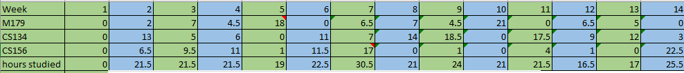
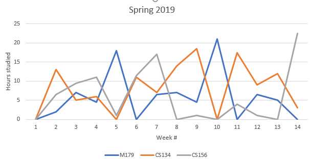

I've been trying my best to focus and maintain Flow these last 2 weeks. In doing so I've learned something about myself. I'm in this weird state of being social anxious and afraid of people while still being needy. Like, I'm scared of people, but I still want people to be around. I think this is some weird evolution from my lifestyle since I was little. I never really had friends in high school or college. Just classmates. Like, did you know that kids actually hung out together after school? It wasn't until I graduated from high school that I realized people did that. I always thought that people went straight home and watched T.V. or played video games. So, I was that kind of kid. My only "friends" were the people I'd listen to via the internet. The people over at Two Best Friends Play (Matt, Woolie, Liam, and Pat) as well as Dansgaming were like the only people I "interacted" with throughout high school and most of college. When I was at San Jose State University, I ended up learning Japanese. In order to practice listening comprehension, I started looking up videos of people speaking Japanese. That's when my network of people I listened to expanded a bit (Igasaki Ayaka, Haru Amachi, and Asami Yui). What I'm getting at is that I grew up listening and not really talking. And I would listen ALL the time. At least one of those 8 people were in my ear at all times unless I was in class.
This is a problem now because I can't reach flow easily. Part of flow is 100% concentration. Something that I can't really do unless I'm isolated. I'm used to being by myself physically but not mentally. I need someone talking and making noise at all times or I get really depressed. That being said, I can't reach flow with such distractions playing in the background. Only when I program or play League of Legends, can I reach flow with distractions happening around me. It's a serious problem. I always thought I was stoic and independent, but that is definitely not the case. I'm actually really lonely and needy. Sigh.
My birthday is in 2 days. I'll be 25 this year. It's a really rough time for me. I get reminded about how much of a failure I am. I was such a brat growing up, and my parents were poor. I would tell them to buy stuff for me and throw tantrums when they didn't. I... I really want to pay them back but I'm such a loser. No friends, no jobs, no social skills, and a fear of people. I just. I don't know how I can pay them back. They deserve something for keeping my useless self alive for all these years.
Life is so rough. I don't know what I'm doing. I know, everyone is struggling, and we all have our problems. I know nobody cares about where I'm going. I known I'm just a whiny piece of trash that's struggling to stand. It's just so embarrassing for a 25-year-old college graduate to still have problems like this. All my cousins are 27 and older. They all have nice jobs, houses, and pretty wives/girlfriends. Meanwhile, here comes little awkward Tony being a dead beat loser, just as he always has been. I just... I'm the only college-educated person in our family. I have 8 cousins who stopped their education after high school. Of the 9 of us, I am the only one who isn't able to support my parents in any way. My parents invested money in me that they really shouldn't have, and I just, I'm not equipped to pay them back. Ah... Is there a point in doing anything. Maybe I should just kill myself. At least that way my parents won't have to spend money on keeping me alive anymore. Sigh. It's fine. I get mood swings like this all the time. In two weeks I'll probably have a post talking about how bright the future looks and about all the progress I've made. Then 2 weeks after that will come a depressing post. That's always the case, right? It's fine. I'm okay. Yeah. I'm okay. Just being crazy as usual.
Flow
July 26, 2020
So I've been doing a lot of reading lately. Two of the books have been (if you'd allow me to be a bit dramatic) life-changing. One book is called Flow and the other is called Pragmatic Thinking and Learning. Today I'll talk a little about Flow and what how I'm currently using it.
I've always been wary of "self-help" books because often time they seem culty. The reason why I picked up Flow was because it was actually a required/recommended reading at Harvard University at one point. If the people at Harvard think it's good, then maybe it won't be some culty money-grab. It definitely wasn't. I'm not that best at explaining things, but basically this is what I got from Flow.
The meaning of life is purpose
Purpose is arbitrary (We decide what has meaning)
In giving our life meaning, we can run towards a better way of life
Attention is a limited resource, by properly spending our attention on our purpose, our quality of life increases(because we spend less time on things like dwelling or checking Twitter or whatever)
Flow is the ability to give 100% of our attention to the task we're doing
By having purpose, we can obtain Flow easier as we know where to spend our attention
To stay in Flow, you have to think about skill vs. challenge. Not enough skill and too much challenge = anxiety, too skilled and not enough challenge = boredom
One of the reasons I like Flow is because it matches with a philosophy that I try to follow called existentialism. Existentialism basically says "existence precedes essence" or easier terms, "you exist and then you make yourself". I believe that people are of limitless potential. The only thing blocking them is resources. Given enough time and effort, I believe that anyone can do anything. My favorite math professor used to say so all the time. "The only difference between a dumb person and a smart person is time. A dumb person will take 2000 hours to learn something while a smart person will only take 1000 hours. So what? It's not the time that is important. It's the eventual mastery of the skill."
When you combine the idea of existentialism and Flow, you get this. Life is meaningless. That being said, the quality of life depends on the meaning we give it. You exist and then you decide where you go. You are nothing until you act. It's like... Hmm... It's like, you can say you love someone all you want, but that doesn't mean anything. It's in the actions you take that decide whether or not you love someone. Lately I've been trying to spend my attention in a more concentrated fashion. I'd like to try my shot at solo game dev. I'd at least like to try while I'm young and before I give up to become a code monkey for some company.
Flow is an incredibly hard state to reach. The only times I can ever reach Flow with 100% chance is when I'm programming or playing League of Legends. As soon as I program or play LoL my internal voice goes quiet. The world disappears. The only thing in my attention is whatever problems come my way in terms of those two subjects. Whenever I try to read books, exercise, or even play video games, I end up getting distracted for a couple seconds every now and again. That being said, just because I get distracted doesn't mean I didn't get any work down. This post will end up being too long if I talk about the other book I read, but one thing I learned from the other book is "Imitate, Assimilate, Innovate". A quick way to learn is through instincts. To be a good writer you need to read a whole lot of books, copy what those books do, understand why those books do the things they do, and then put your own twist on what they do. I've been putting this ideology to use these last couple months. I've been doing 18 hour days. From 6-12 I have been reading books, playing games, and watching movies. I did so while paying attention to art, writing, and gameplay. From 12-12 I have been programming, drawing, and writing. 5 hours programming, 5 hours drawing, and 2 hours writing.
I want to create games that are depressing, thought-provoking, or just mindless fun. I either want to help people run away from reality or prevent them from running away from it. The first game I'm making is being made with intention of being depressing. If I can get that feeling across, then I'll be happy. So far, my game script is done. I'm still editing it to be more game-like than novel-like. I also need to work on my art a lot. So long as I have the time and the lack of external forces pushing me to work, then I'd like to continue pursuing this.
Corona Virus and My Life
April 19, 2020
The world is in an interesting place at the moment. The Corona virus is currently making things hard on a lot of people. No work, no money, no stability. It's causing a lot of ugliness to show itself. The hoarding and stealing just makes me depressed. I mean, I get it, but it's not a reality that I want to accept, ya know? That being said, the quarantine hasn't really affected me at all. I'm a shut-in potentially schizo weirdo after all.
So... I finished the script for the game I mentioned in my last post. I finished around the end of February. The only thing missing is actual execution. The code isn't all that hard to write and the 3D models aren't hard to make. The thing is I was hit with existential dread again. Like, what's the point? I'm 25 and directionless. That's like, really bad, in my opinion. Game creation is fun, but once money and opportunity cost enters the picture, I get really intimidated. Like, a part of me thinks I'll never be hired as a programmer, and that I should just look for a minimum wage job somewhere. In fact, the only thing stopping me from looking for a garbage minimum wage job is this quarantine.
I don't know how I got to doing what I did, but I made a scraper for DLsite. I think I wanted to rationalize not becoming a game developer by studying the porn game market. So I read through a Python crash course textbook and wrote a program that gathers data from DLsite using Python. The acutal code is on my github page and I sometimes post results on my twitter. From my studies so far, I can say that there are a lot of game developers that make a LOT of money. It only takes one game for a developer to make more than a million dollars in under a year or two. It's quite absurd.
Mmmm... I'm not sure if I have any other thoughts to dump here... Oh, I read a biography about Paul Erdos, a mathematician. It was inspiring but also crazy. I don't know how anyone can commit their entire lives to one thing. I mean, I committed like 7-ish years to League of Legends, but I didn't like dedicate every ounce of me to learning every ounce about League.
So... yeah. That's my brain dump for now. I plan to start 3 projects: 1 for each of the programming languages I know (Java, C++, Python). C++ project will obviously be something game related (maybe I'll make a tamagotchi?), Python will be data science related (maybe scrape porn sites or other porn game sites), and java will be something serious (maybe cryptography related?).
Wishy Washy McGee
February 7, 2020
I wrote an essay pitying myself and how dumb I am. I deleted it. TL;DR: Right now I'm working on a game. I'm going to do the programming, 3D modeling, and directing. The game will probably take an hour or two to complete. It's going to be in dedication of my favorite youtuber. I currently have 10 game projects I want to start, but this idea is the easiest due to the fact that I can make all the assets myself while still being happy with the results. So yeah, I guess we'll see if I get all wishy washy in the next post too.
December, The True Horror Month
December 14, 2019
So, I'm not dead. It's just that Thanksgiving, Christmas, and New Years are my least favorite times of the year.
As far as life goes, I've given up on the game dev stuff. I could do it, but I realize that I enjoy playing games more than making games. I think my new life direction is more practical. My new objective is to join IT. I have a background in software and hardware isn't that hard to understand. So here is my current plan of action:
1. Get A+ certified by the end of January 2020
2. Get an IT Job by the end of February 2020
3. Work in IT while studying for new certifications
4. Become a system administrator
It's a simple path that I don't think I can mess up. I chose this path because I kind of life computers and I seem to have some proficiency fixing things. I don't really want to deal with people, but to be alive is to have to deal with people. So, I guess I just need to grow up a a bit.
Spooktober
October, 2019
Roughly 2 weeks since my last post. In that time I did a bit of programming, read the game design book and played video games. The game design book is for the most part finished now. The games I completed were Persona 1 and Persona 2: Innocent Sin. I have a lot to say about those games, but I'll leave them for a game analysis write-up.
So... It's October now. I don't have a working game system and I don't have any completed games. It bothers me. Makes me feel incompetent on multiple fronts. So with that in mind, my goal for October is to make a completed game in RPGMaker as I hone my skills as a game designer.
Another week over
September 15, 2019
Woah... It's already Sunday... This week I did a bit of reading about game design, analyzed some games, and I worked on my little game.
Right. So let's start with the readings and game analysis. The readings were focusing on mechanics, puzzles, and player motivation. I actually read less chapters than I thought I was going to this week due to how meaty these topics were. Game balancing, creating puzzles, and targeting a certain audience while designing are all fun activities. The games I analyzed this week were Catherine and a Japanese porn game called ナンパビーチを誰とでもヤリまくりヌーディストビーチにしよう!!. I thought I could do one game analysis a day but I realized that I couldn't. There is just too much to study and the 2 hour daily limit I gave myself wasn't enough. I think going forward I'll do like 2/3 games a week. Mmm... Maybe 2 very meaty games and 3 porn games?
I feel like I learned quite abit from studying these games. It's a very introspective task and one I enjoyed a lot. I studied intended audience, reception, replayability, intended experience, my own experience, game mechanics, story, and a whole lot more. I learned a lot about myself. Note: so much from studying the porn game (although I did find some game mechanic inspirations from the porn game) but from studying Catherine.
This coming week I will be studying Digimon World 3, Dark Souls 1, and Catherine (again). As far as smaller game titles... Maybe, Baba is You? I don't kno what other games, but at least 2 more are coming.
As for the game dev side of life. Planning is so hard. Any game design document I try to make turns into scratch paper for my thoughts. I feel like I'd waste so much less time if I spent more time planning. That being said, I make like 0 progress. It just feels weird. What I've added this week is the ability to load scenes from a file, a vector to track of keys down while moving so that the player can hold multiple buttons down, and a logical and legitimate camera for levels. Like... How do I put this. The progress I made would not have been done at all if I was not repeatedly bashing my head against the code. That being said, my project isn't done yet. For all I know, I might be piling bandages on top of each other and soon enough they're going to fall off.
So... Next week. Try to read one chapter of game design book per day, study some games through the eyes of a game designer, and keep working on my project.
Reading Textbooks
September 9, 2019
This post is one day late again. Struggling as always. I made no tanigble progress last week on any games. This is due to the fact I picked up some textbooks. I went over a c++ refresher textbook and am currently reading through a game design textbook. I am also reading up on OOP. From what I've read so far, I should focus on completely a draft of a game design document before doign any coding. A lot of things can go into game design and I am definitely interested in following suit. So, I have a pretty straightforward plan for this week. Look at my favorite games, do an analysis of them through the lense of my newfound knowledge, and work on designing my own games. For things to show next week... Maybe I'll create a new webpage for displaying my reports on the games I have analyzed. I also want to make some advances on my game projects.
Moving
September 1, 2019
Another week has gone by. I didn't do much programming. I mainly spent the week packing up my room. My mother is attempting to sell her house. Packing up was depressing trip down memory lane. I've made so many bad decisions. So so so many... My life is basically just a ball of regret. Bad relationship with my family, no friends, no job, my teeth are messed up, the car my parents are forcing me to take care of is messed up, I haven't seen my dad in years, and so much more. This isn't really a pity party. I'm no victim and I want no sympathy. All that has happened is my fault. If anything, I'm a loser. There were many opportunities to shine and find some happiness in life, but I always chose to run. It's what I do best. All 4 of my parents are getting older now. No kids, no money, no nothing. It's like, what have I been doing all this time? A part of me knows I want to pay them back for keeping me alive till now but another part of me just wants to keep running. The more I run, the older they get, and the less likely I will have any resolution with any of them. Well, I think I'm done sharing for this week. This sucked. I'm going to sleep now.
Game Dev
August 25, 2019
Here is this week's demo. I did in fact manage to create a level system that works with the sprite system I had before. I'm happy with how it turned out.
So... I'm not really sure what I want to do next week. I think... I want to start working on a battle system but I should probably keep working on the level system. Things like adding clickable events (talking to NPCs, opening chests). Yeah, that sounds fine.
As for life and reality. It's the same old depressing stuff. I'm directionless and depressed. I think I might go back to school for something. Maybe become a physical theraphy assistant or maybe an English teacher in Japan. I think the English teacher in Japan thing sounds neat, but like, me as a teacher? Sounds like a disaster waiting to happen.
Game Dev
August 18, 2019
Well, as promised, here is a demo of what I have gotten done since last week.
I severely understimated what it takes to make an RPG. Definitely not impossible, but I need more than a week to create the systems. What I've learned is that planning is incredibly importing. I've always followed one of my math professor's rules of "building the plane as you fly it" but I'm coming to see now that this ends up creating more work in the long run. Like... I mean I guess that way of life means that things are guaranteed to be made, but I'm not sure if it's worth the extra work. So... yeah, next week is going to be me playing FFX and working on my game dev stuff. Hopefully next week I can provide a demo of a level system.
Final Fantasy 9 and Game Dev
August 11, 2019
Last post I wrote about studying companies and making websites based on my research. I think the website creation part is a waste of time so I didn't do any webdev. Instead I ended up studying on Squaresoft and Enix. I decided to play FF9 and beat it in roughly 39 hours. (Long unedited rant incoming. Next paragraph is what I did on the game dev side of things.) I did not like it. I thought Vivi, Steiner, Freya, and Quina were interesting characters with nice stories around them. I had ZERO (0) investment in Zidane and Garnet. Zidane's whole skirt-chasing carefree but wise attitude is boring and lame in my opinion. Garnet's whole princess seeing the world story just had zero effect on me too. I just. Ughh.... I don't think I've ever disliked main FF characters as much as I disliked Zidane and Garnet. I always heard good things about FF9. It has amazing music, a good story, and well thought out characters. Well... I liked the music. The song played in Dali isn't exactly Balamb Garden tier, but it's really good. The story... Princess has conflict with mother, princess leaves home, mother is bad guy, mother defeated and it turns out something bigger is at works. It was... Like I didn't like it at all. I think I had zero investment because I didn't like Zidane or Garnet. That being said, Steiner, Vivi, and Freya's stories were very good. Were the characters well-written? In the sense of "Is this how that type of character would react in real life?", then maybe. I'm no writer, but I didn't think any of the characters were weird or that they spoke in a way that betrayed who they were. So, overall this was my least favorite FF game to date. For reference, I've played 1-8, 12, and 13 before playing FF9. Now, if I played FF9 at a different stage in my life, I may have enjoyed it more, but right now, no. Just, not good. By the start of disc 3 I had to start taking breaks instead of playing for long periods of times because I just felt like I was dragging my feet through the game. THat's about all I want to say I guess.
Game dev wise I started creating my own little system from scratch. I want to make a basic RPG from scratch, but I did the easiest part first. The whole visual novel dialogue system. Yeah I could've used Ren'py or something, but that isn't fun. I'm more interested in creating my own tools and learning how things work(or at least how I would make them work) than creating a finished product.
Next week I'll hopefully have a video demo of me going from main menu, to RPG world traversal, to ingame menu, and final to a conversation. I also plan to play FFX for the first time. Going to be lots of fun hopefully.
Well, I'm here now
July 30, 2019
It's been over a week since my last post. I avoided it because I did not have anything good to report. Last week was kind of me giving up. I ran away and shut off my brain. Here's the deal. I'm a loser. I can make short term plans all I want, but I end up crumbling once I take a look at the big picture and see how hopeless it all feels. I don't see a bright path in front of me. I'm not going to whine and mope on here, but just know that I'm not in a good place.
Here are my current objectives for August: Study a gaming company on Sunday Choose 2-3 games from that company to play during the week Make a website in dedication to my research and thoughts on the company and those games Continue with game dev stuff
So... that's the plan. The rest of this week and next week will be dedicated to Square Enix. I could finish a shitty game within the month. I want to, but I can't force myself to say I will. A person who says they will continuously keep promises but doesn't isn't something I like. So I just will just expect less from myself. If I can prove I'm not a trash can, I will raise my standards again, but for now, I think it's safer to think of myself as incompetent.
Introspection
July 22, 2019
This post is one day late. As such, you can probably guess that my performance this week has not been close to what I wanted. Like my favorite professor says, honest introspection is the key to improvement.
I wrote a depressingly long introspection and decided to omit it from this post. It was pretty personal and depressing. It's one of those bad luck charms that future me can just look at and get immediately brought back in time to get depressed all over again. I spent a lot of time writing it and didn't come to any good conclusion anyway. So, like I always do, the strategy now is to run the fuck away and hope things work out. I'll worry about this during my end of month reflection when I'm forced to become an adult.
Plans for next week: finish RPGMaker game, start studying macro and microeconomics, review calculus and probability.
Digimon time
July 14, 2019
I'm not sure what happened but I ended up on a Digimon spree. I watched a bit of the Japanese version of Digimon Tamers (DIGI MODIFY > CARD SLASH) and I also beat Digimon World 3 for the first time. I liked Digimon World 3 but it was definitely a bit archaic. Traversing the map was slow, loading screens took forever, and battles were too frequent. The game would be a solid 8/10 or 9/10 if they added quicker ways of traveling and changed battle encounters to like a Trails in the Sky type of thing where battles had to be ran into in some way. Like, you don't have to make the Digimon visible on the world map. They could just make it so there are safe/danger zones. Like how Pokemon does patches of grass. That being said, in exchange for Digimon time, I definitely did not do the things I was supposed to this week. Let's talk about that now.
I did manage to finish the grammar section of the Genki I textbook. I did not finish a script for RPGMaker but I did come up with multiple projects to work on. The stats studies kind of fell off. Reflecting on the week now, I think I know where the Digimon fever came from. I talked to my mom recently about how I'll start looking for work next month. It's bleak. I have a degree in applied math, but I don't feel confident about how my skills translate to anywhere. I'm confident that, given a job, I can learn to do it quickly, but I'm not sure why anyone would bother to hire me. Under all that stress I ended up running away to Digimon land. Oops. At least did the bare minimum and did some JP studying.
So... These last 2 weeks are going to be my last days of freedom. I'm going to be looking for and eventually spending all my time working starting from August onwards. I still want to finish one of my RPGMaker projects because it's fun but I'm still sad about the bleak looking future ahead.
Here is my plan for next week. Japanese will focus on workbook practice + vocabulary. I want to remember what I've studied, so the best thing to do is to keep using and reviewing Japanese. I'm going to finish a rough draft of my RPGMaker game by the 17th and then start working on actually producing the game from then onward. Story won't be the greatest but that's what it means to work on a deadline. Stats... Stats is kind of dead for now. I want to keep planning around it but I know deep within my heart that I won't spend time on it. So I'll just be focusing on JP studies and game dev for now. So yeah, that's about it... Oh, also, there was this video by Plague of Gripes posted recently titled "Let's Gripe about Villains" that gave me a lot of writing types and ideas. I'm pretty excited to put what I absorbed from that video in to use.
First week of effort
July 7, 2019
Well, this first week was decent but not amazing. I made a lot of progress, but not as much as I should have during that time. Let's start with my Japanese studies. I managed to do 8 chapters of the Genki I textbook in a week. Not hard at all and it was mainly review. My stats studies isn't hard either. My RPGMaker game script is coming along great. I can definitely have a finished script done by the end of next week. I finished a walking simulator in Unity. It took barely any coding at all. You have an object that has a position, and you apply physics on that object based on whatever the player presses. I can easily code that using OpenFrameworks.
So... Let's talk about what I want done by next week.
Japanese. I want to finish the final 4 chapters of the Genki textbook. I'm not sure what I'm going to do after that, but I definitely know that learning Kanji will be involved. I guess I could move on to the Genki II textbook, but I feel like I need to let the things I learned sink in more. So yeah, finish the textbook, solidify what I learned through flashcards and workbook attempts.
In statistics I should... You know, I'm starting to lose interest in statistics. That being said, I'm going to stick with it, because I want my mathematics degree to be useful in some way.
Game dev... Finish the RPGMaker script. Maybe come up with something to do in Unity? Maybe I should try to make a clone of something that already exists? Oh, I also want to write an RPG from kinda scratch. I think that would be a fun use of time.
So yeah, that's the plan. My problem is I'm getting easily distracted. If I'm getting easily distracted, it's probably because I have not taken enough breaks. The problem is that I fly off the tracks even further when I do take breaks... I fall asleep, get too into whatever game I'm playing, or lose track of time browsing the internet. I'll try to be more conscious of those things this week. So, here is the new plan. I'm going to break my Japanese studies into two blocks. One will be the study portion and the other will be the review portion. My stats studies will be shortened to two hours also. One hour of reading and the other hour of practical work. My game dev time will stay the same. That's it for now. Cheers to a new week.
End of month reflection
June 30, 2019
Well. Here we are. The sands of time have moved forth but I haven't really moved much from the starting point. So, I have created a couple game design documents, studied a bit of RPGMaker and Unity, and did a quick review of Japanese. That being said, I haven't finished the Genki textbook, and I do not have any completed projects. I'm pretty annoyed with how little I do when there is no sense of urgency.
When it comes to doing things, I believe that raw motivation is all a person needs. If there is a will there is a way and what not. Whenever it comes to something like this, I remember struggling in school. During my last year of university, I would only get 4 hours of sleep between my daily commutes. I had to take a 3 hour train rides at 4AM and 6PM to get to campus. I would sleep from 10PM and wake up at 2AM if I was lucky and immediately fell asleep as soon as I got home. During the morning commutes I really wanted to sleep, but I couldn't because the first time I slept on the train, I woke up to very angry people around me. I didn't realize it till I was 22, but apparently I snore. Since I learned I snored, I endured a 3 hour train ride at 4AM in order to let those around me get good rest. I didn't drink coffee or anything, and relied on willpower plus strategies such as playing video games or watching movies on my laptop. If I can stay awake for 20 hours and sleep for 4 hours over a long period of time, I can keep a daily schedule through pure willpower alone.
So, I want to show that strength now. I will try to make July the month of progress. My goals for July will consist of finishing the Genki textbook, completing 2 games (Unity + RPGMaker), and getting a 3rd of the way through a stats textbook. In order to do so I will be doing as I always have. I will be breaking my days into blocks, and then doing daily/weekly reviews to see what changes need to be made. I'm going to start with a 17 hour day + 7 hours sleep schedule. Sleep at 11 and wake up at 6. I should probably create timelines for my games, but... I don't really know. So maybe... Hmm. Okay, I'll do this. I'm going to be making an RPG (RPGMaker) and a walking simulator(Unity). The rough draft of the RPGMaker game's story should be finished by July 14. The rest of the time after that will be on creating the game in the engine itself while updating the story. The unity walking simulator should honestly only take maybe a week to do. So, I'll just update my direction on the Unity game next week.
So... Yeah. June was lazy town. July will be me proving to myself that willpower is king. And... That's about it I guess. Oh, wait, one more thing. Riot Games launched this new project called Teamfight Tactics. It's pretty addicting and very dangerous. I could play it for hours on end without getting tired of it. Really need to be careful of it in the future.
Did some stuff in Unity
June 23, 2019
So, this week was rough. Problems with parents and I've barely been able to eat this week. Really hard to focus. That being said, I took an hour out of my lazy week to learn a bit of Unity. It's really easy... I'm not sure I like how you can just drag and drop things to make games. I much prefer to write the code itself. I had to make a little 2D platformer for my game design class' midterm. It took a couple days to do. I managed to make a very very simple skeleton version of that midterm in Unity in about 30 minutes. It's lacking sound and animation, but it took no effort at all to do. Here is a little demo.
Doesn't look nice, but it demonstrates the ability to control a character using a keyboard, and the ability to use physics to move the character. So yeah, if I actually invested time into myself, maybe I can make something worthwhile. I'm going to keep the same strategy as last week. Maybe I can do a 16 hour day?
Downwards Spiral
June 17, 2019
I'm in a bad spot mentally right now. I just have this generally depressing outlook on my future, and it has left me with an unproductive week. My Japanese review hasn't advanced at all and neither have my game studies. Instead of moping, I guess I should try to get over it and move forward. So, yeah, my weekly post is one day late, but let's get on with my report of last week. I ended up finishing Dragon Age: Origins. It was good. There were actual roleplaying aspects written into the dialogue and players could change the story a bit based on the choices they make and the stats they have. If I were to make a game, it'll be full of numbers that affect the story. So... That's about it for last week. For this week, I will try to get back on track with my Japanese studies and game studies. The idea of breaking my day into blocks will still be my approach. The only new addition for this week will be mathematics studies. I picked up a statistics book and will be spending a block on it as well. So yeah, I'll be active from 6AM-10PM and have my day broken into blocks. This is 16 hours that can be put to use.
Adding Structure
June 9, 2019
This week was nothing special. I played Dragon Age: Origins, reviewed chapters 1-3 of the Genki textbook, and watched a bit of LCS. Next week will have similar structure. Wake up, play a bit of DA:O, study Japanese, relax, play more DA:O, watch a movie, and then sleep. I'm going to start getting a bit serious about time management. During university I used to cut my day up into time blocks and have a goal for each block. I enjoy that structure as it prevents me from being lazy. Also, my parents are coming back from a trip next week, so I'm going to have to clean the house a bit. Aside from that, just keep going with the flow.
Sleepy week
June 2, 2019
This week was as expected. I kind of just survived and dealt with the things I had to. Next week is when the fun begins. I have Dragon Age: Origins for gaming time, I'm going to be working on a simple RPGMaker game, and I'll be studying Japanese. A very fun week ahead of me. I have some additional goals for the week. I'm going to try and spend less time on Twitter and Reddit. That's pretty much it for now. Just don't tilt, study seriously, and try to have fun with what little I have for the time being.
First Few Days of Freedom
May 26, 2019
The last 3 days have been fairly decent. I played a bunch of Chrono Cross, tidied up my room, bought groceries, and did a lot of sleeping. I wouldn't say they were a perfect use of time, but whatever. I'm the type of guy who performs poorly without some form of structure towering over me. I need some goals and rules to keep me in a direction. So, I guess I should write those out now. I've already said I wanted to focus on game dev and Japanese, but I need to break those down into parts. Like, what do each consist of?
Game Dev: Art, Writing, Programming, Music
Japanese: Listening Comprehension, Reading(Kanji, Grammar, Vocabulary)
So, for Game Dev, I should focus on the programming aspect for now. Art, writing, and music are things that any one can do given time. Programming is the same, but more technical. For Japanese... I don't particularly have a focus. All parts are important.
Goals for June:
Game Dev: Create a 2D game in Unity using tutorials, create a 2D game in openframeworks from scratch, study RPGMaker
Japanese: Finish Genki I textbook
3 games isn't particularly hard. Unity will probably just take an afternoon to do with tutorials going. I already have code for openframeworks working as seen from my previous post, so I can probably use that as a basis for my 2D game. RPGMaker will be purely for fun. That style of 2D RPG games is what I grew up on, so I want to be a master of RPGMaker.
The Genki I textbook is quite large, but I have done 9 of the chapters during university. The idea is to have a solid refresh of the information while also picking up the habit of actually studying. The pacing overall will be like 3 chapters per week + kanji tests.
Mmm... I think that's it for now. I guess I should write out what I hope to hear about next Sunday. This upcoming week is going to be a bummer for me, so all I can say is to just survive it. I have familial obligations that I don't want to do, but I will do because I'm a pushover. So next week, I just hope to hear that the week wasn't as bad as I expect it to be.
Post Bachelor's Degree Life
May 23, 2019
Planning is easy, but execution is extremely difficult. I said a lot of stuff in my previous posts that didn't come true. That is because I struggled quite a bit in my last semester of university. I had one really bad professor who caused a lot of unneeded stress due to how poorly he ran the class. Now, that I no longer have to deal with school, I can focus on building myself the way I want to.The plan hasn't changed. Game Dev and Japanese studies are the way to go. I have written a set of goals for different time frames and will be working on those. I hope to stay productive now that I have nothing pressing me to. So... yeah, cheers to freedom. I should probably do like a deep reflection about my education and life till now, but I'll save that for another time.
Instead, I'll post some results about my study habits and results of my efforts.
Here is what my weekly hours looked like as numbers and as a graph.


So "fun facts" that can be gleamed from above.
Avg: 20 hrs per week Most in 1 week: 30.5 hrs Most in 1 day: 11 hrs Most for 1 class in a week: 22.5 hours Most time spent = highest grade Least time spent =/= lowest grade
The 2D game isn't what I wanted it to be, but I'm satisfied with how it came out. The 3D "game" wasn't all that amazing due to how little time I could put into the class. I could have technically not turned in the 3D game and still passed with a B-.
Plans for 2019
December 21, 2018
There are a couples things I want to focus on. In no particular order, Japanese (studies and old school music), stoicism, music composition, game development, blogging, and 3D modeling. Stoicism is my combinatorics professor's guiding philosophy. I want to be like him so I'll try and follow suit. If I'm going to have an honest conversation with my self, I'd start by saying that I'm reaching for too many things at once. I can study all of them, but I need to specialize in one of them. I think I'm going to focus on game development for now. My current plan for the future is to get whatever job I can while working on my dream as an indie game developer. I want to make a game that cater to my problems. A YouTube artist that I watch by the name of PlagueOfGripes always says that we should enjoy creating art. He says that we should hone in on the things we enjoy and create them. The idea is to get those feelings across to others who also enjoy the same thing.
So the actual plan is... I'm going to focus on learning RPGMaker and Unity. I'm going to start by making games to learn the engines. I'm going to use the things I learned at university as a well for inspiration. Meanwhile I'll be studying Japanese, stoicism, music composition, and 3D modeling. Actually... Hmm, maybe I should use those topics as inspiration as well. Like, turn the process of game development into review sessions for the things I'm studying. So my problem of taking too many things on at once is still there. The things I'm studying require a lot of "lab" time where I need to play with things. Japanese, blogging, and Stoicism can be done daily for like an hour each. Music composition, 3D modeling, and game development require a lot more time. So, I guess I can do game development 3 days a week and the other 2 will be 2 times a week. (This is only until school starts up again). Once school starts again for the last time (I should be graduating Spring 2019), I can do a rotation of the 3 topics while on the train to and from university. Now, another honesty check. Do I really think I can keep such a schedule? The answer is maybe. It isn't a solid yes because I know how easy it is to plan, reach a wall, and then completely crumble. I don't want to be as I am. I don't like the type of people in the communities I am currently a part of. It's a bit scary, but I'm going to try to change. My combinatorics professor wrote out this really long letter to us that states his thoughts on learning and what it means to grow as a person. With that as my guiding light, I'm going to slowly work towards becoming the best version of me possible.
The End of a Semester
December 21, 2018
This post will be one of 2 posts. I have decided to start titling posts. This post will just be a very unorganized reflection of the semester I jsut finished. The next post will be my thoughts for the future. This semester was the hardest semester of my life. I'd feel very proud if I managed to pass all my classes. The grades won't be posted until tomorrow, so I'm trying my best to patient. The classes I took this semester were, Intro to Computer Graphics, Ordinary Differential Equations and Dynamical Systems (DiffEq as my professor called it), Intro to Combinatorics, Engineering Reports, and a geology class. The start of this semester was incredibly difficult due to the amount of things I had to review or just uptake in a short amount of time. Intro to computer graphics required me to translate my knowledge of java to C++, diffEq required me to review calculus (which I haven't used in a year), and combinatorics required me to review discrete math. It was a wild ride that I never want to go through again.
My main takeaways from this semester were mainly from intro to combinatorics. My professor... He is a great man. One I want to emulate. The way he taught the class, listened to students, and challenged our thoughts was amazing. If he was some sort of leader, I would have asked to become one of his disciples by the end of the semester. The twelvefold way is something that I want to keep with me for the rest of my life. I have it as my background image as of now, and It will stay that way for a long time. (Just in case something changes, picture is below. Yes, I'm a fan of Danganronpa. Check out John Wolfe if you want to watch a cool Texan and his girlfriend play through the trilogy.) On the last day of class, professor did a Q&A with us. One question he was asked was "How do you improve yourself as a person?". My professor's response was "You start by learning to have honest conversations with yourself. I claim you are all equally qualified to do the tasks I and the world set for you. Only you can explain why you don't do them.". That was such a profound statement to me. (side note: he enjoys stoic philosophy) Often times during class, he'd say "You have better things to do then rewrite all the things I write on the board. Listen to the words I'm saying and try to understand them instead." I only realized a quarter of the way into the semester that I was on autopilot taking notes. I wasn't actually learning or listening to him at all. Hmm... Okay, that is enough unorganized gushing about what a good role model that professor was.
The second tier of takeaways came in the form of ray tracing. I studied a lot of modelling stuff before I took intro to comp. graphics, but I had no idea what went into actually rendering images. Basically we have a punch of lasers that we shoot at things to test for intersections. Combine those with different types of lights, positions, colors, and boom, out comes a pretty picture. It's not completely relevant but a group of YouTubers I used to watch would use the term "punch lasers" when referring to Naughty Dog's The Last of Us and how some melee interactions occurred. I think of ray tracing as the same thing. You interact with a machine, lasers come out, math happens, and then things occur. Yeah... My explanations aren't the greatest, but I get the ideas, I swear. Ah... Oh, one more thing about intro to comp. graphics. There were projects all semester that I really enjoyed doing. I posted some of the videos in my programing blog. Maybe I'll post the rest some other time.
April 10, 2018
So, school is almost over now. I'm on track to passing everything.
The main point of this is to just document the fact that I will doing a project for one of my classes (Intro to information security). I will be making two webapps. A poorly designed one and a properly protected one. I have to prevent hackers from doing all sorts of things, especially around site registration and login. In the poorly designed site, I will give a presentation of me attacking the site, and all the things I did wrong. I will then show how everything is done right.
So yeah, I'm looking forward to it, and it'll give me something to document on my projects blog.
March 3, 2018
Wow, it's been a long time since I last wrote anything. I'm currently nearing the end of a week long break from school. I don't really know what I'm doing with my life as of now. I have about a year left of university. I'm not really sure what that means yet. The chance of me being kicked from or graduating from university is equally likely. I believe that whatever happens now is all up to my work ethic.
It took 4-ish years, but I'd like to put my degree towards becoming an operations research analyst. Using mathematics to making logical decisions is something that greatly interests me. Something that I'd like to put my life towards getting better at. Graduating university would mean not just completing my education, but growing enough as a person to make and execute the right decisions. I'm scared of failing, but I would accept it if it came. That probably isn't the best attitude right now, so I'm looking for ways to change my strategy.
I think the first strong decision would be to cut things out of my life that aren't helping me achieve my goal. I spend too much on time-consuming entertainment like YouTube and Reddit. That's a no-no for someone who is on the verge of being kicked from school during their last years of school. If I'm going to waste time on entertainment, I might as well do a form of entertainment that will lead me somewhere (Like making websites, programs, and blogging). Which is why I guess I'm back here again. So cheers to documenting the development of myself and the world around me I guess.